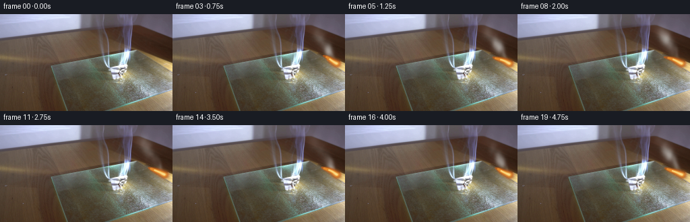
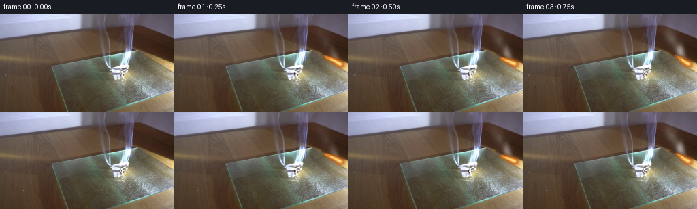

CODING AGENTS AS PIXEL WORLD MODELS
traex/GPT-5.6-Sol · 0139
点击播放 · 原生 RGB 像素
逐轮保存的候选
回放视频、检查图与代码变化。
每份候选均可单独播放。实际图片检查记录在下方工具轨迹中。
候选 01播放与检查图
点击播放 · 原生 RGB 像素


展开代码变化
--- 上一保存版本
+++ 本次保存版本
@@ -0,0 +1,201 @@
+"""Procedurally animate the supplied locked-off burning-paper photograph.
+
+The photograph remains the plate for every frame. Only the flame, its very local
+illumination, a slowly charring edge, and a coherent translucent smoke plume are
+changed. All synthesis is analytic / numeric and deterministic.
+"""
+from pathlib import Path
+import math
+import cv2
+import numpy as np
+from PIL import Image
+import artifact_io
+
+CASE_DIR = Path(__file__).resolve().parent
+H, W = 144, 256
+FPS, N = 4, 20
+
+
+def smoothstep(a, b, x):
+ q = np.clip((x-a)/(b-a), 0.0, 1.0)
+ return q*q*(3.0-2.0*q)
+
+
+def composite(im, color, alpha):
+ """Source-over compositing in float RGB."""
+ a = np.clip(alpha, 0.0, 1.0)[..., None]
+ return im * (1.0-a) + np.asarray(color, np.float32) * a
+
+
+def make_clean_plate(src):
+ """Remove only the small amber flame from a copy of the photograph."""
+ im = src.astype(np.uint8)
+ r, g, b = [im[..., i].astype(np.float32) for i in range(3)]
+ yy, xx = np.mgrid[:H, :W]
+ roi = (xx >= 216) & (xx <= 246) & (yy >= 56) & (yy <= 76)
+ # Chroma isolates the existing flame while leaving the board and paper intact.
+ fire = roi & (r > 116) & (r-g > 19) & (g-b > 25)
+ mask = cv2.dilate(fire.astype(np.uint8)*255,
+ cv2.getStructuringElement(cv2.MORPH_ELLIPSE, (5, 3)), 1)
+ return cv2.inpaint(im, mask, 3.0, cv2.INPAINT_TELEA).astype(np.float32)
+
+
+def smoke_layer(t, xx, yy):
+ """Advected semi-transparent white smoke, assembled from soft turbulent puffs."""
+ # Particles are staggered into a continuous stream. A fixed table keeps motion
+ # temporally coherent and regeneration bit-for-bit deterministic.
+ rng = np.random.default_rng(139)
+ count = 25
+ offsets = rng.uniform(0.0, 4.15, count)
+ life = rng.uniform(3.0, 4.4, count)
+ jx = rng.normal(0.0, 1.5, count)
+ jy = rng.normal(0.0, 0.65, count)
+ size = rng.uniform(0.78, 1.26, count)
+ phase = rng.uniform(0, 2*math.pi, count)
+ shade = rng.uniform(-7, 8, count)
+
+ trans = np.ones((H, W), np.float32)
+ weighted = np.zeros((H, W), np.float32)
+ color_weight = np.zeros((H, W), np.float32)
+
+ for k in range(count):
+ age = (t + offsets[k]) % life[k]
+ # Birth and death are feathered, so wrapping a particle is invisible.
+ birth = smoothstep(0.0, 0.34, age)
+ death = 1.0-smoothstep(life[k]*0.70, life[k], age)
+ # Rising smoke follows the leftward convection indicated by the flame.
+ cx = (242.0 + jx[k] - 7.1*age - 0.72*age*age
+ + 2.2*math.sin(1.18*age + phase[k]))
+ cy = (72.5 + jy[k] - 12.8*age - 0.42*age*age
+ + 1.15*math.sin(0.86*age + phase[k]*0.7))
+ sx = size[k]*(1.65 + 1.20*age)
+ sy = size[k]*(2.15 + 1.67*age)
+ # Slightly tilted ellipses create connected, curling lobes rather than dots.
+ tilt = -0.20 + 0.08*math.sin(phase[k]+0.7*age)
+ dx, dy = xx-cx, yy-cy
+ u = dx + tilt*dy
+ v = dy - 0.32*tilt*dx
+ q = (u/sx)**2 + (v/sy)**2
+ core = np.exp(-0.5*q)
+ # Analytic low-frequency turbulence breaks up otherwise perfect Gaussians.
+ turb = (0.78 + 0.16*np.sin(0.37*xx + 0.23*yy + phase[k] + 0.9*t)
+ + 0.10*np.sin(0.16*xx - 0.29*yy - phase[k]*1.7))
+ a = np.clip(core*turb, 0, 1) * (0.105*birth*death)
+ trans *= (1.0-a)
+ weighted += a*(221.0+shade[k])
+ color_weight += a
+
+ alpha = 1.0-trans
+ smoke_gray = np.divide(weighted, color_weight, out=np.full_like(weighted, 221.0),
+ where=color_weight > 1e-5)
+
+ # A fine sinuous filament connects the separated puffs to the burning edge.
+ filament = np.zeros((H, W), np.float32)
+ for s in np.linspace(0.0, 1.0, 31):
+ py = 72.0 - 25.0*s
+ px = 242.0 - 10.0*s + 1.7*math.sin(6.1*s + 1.35*t)
+ radx = 0.75 + 1.6*s
+ rady = 1.15 + 2.6*s
+ filament += np.exp(-0.5*(((xx-px)/radx)**2 + ((yy-py)/rady)**2))*0.013
+ filament = np.clip(filament, 0.0, 0.18)
+ alpha = 1.0-(1.0-alpha)*(1.0-filament)
+
+ # Frame zero is mandated unchanged. Ease newly rendered smoke in across the
+ # first few observations while preserving physically continuous motion.
+ alpha *= (0.32 + 0.68*smoothstep(0.0, 0.85, t))
+ return alpha, smoke_gray
+
+
+def flame_fields(t, xx, yy):
+ """Return nested antialiased fields for a wind-bent, flickering paper flame."""
+ # Main tongue runs from the paper edge toward upper-left, matching frame 00.
+ flick = math.sin(7.1*t) + 0.42*math.sin(13.7*t+0.8)
+ length = 23.0 + 2.25*flick
+ rise = 10.8 + 1.35*math.sin(8.9*t+0.35)
+ base_x, base_y = 243.2, 73.0
+
+ # Find distance to a curved centerline by sampling it densely. The varying
+ # width produces a natural pointed tongue and softly antialiased boundary.
+ outer = np.zeros((H, W), np.float32)
+ middle = np.zeros((H, W), np.float32)
+ inner = np.zeros((H, W), np.float32)
+ for s in np.linspace(0.0, 1.0, 52):
+ bend = math.sin(5.2*s + 5.5*t)*(0.25 + 1.30*s)
+ cx = base_x - length*s + bend
+ cy = base_y - rise*s - 0.65*math.sin(math.pi*s) + 0.35*math.sin(8*t+4*s)
+ # Broad at the burning edge, needle-fine at the leading tip.
+ w = 0.58 + 4.55*(1.0-s)**0.67
+ d2 = (xx-cx)**2 + ((yy-cy)*1.16)**2
+ outer = np.maximum(outer, np.exp(-0.5*d2/(w*w)))
+ if s < 0.82:
+ wm = max(0.48, w*0.60)
+ middle = np.maximum(middle, np.exp(-0.5*d2/(wm*wm)))
+ if s < 0.53:
+ wi = max(0.38, w*0.31)
+ inner = np.maximum(inner, np.exp(-0.5*d2/(wi*wi)))
+
+ # A shorter tongue splits off and rejoins, a characteristic paper flame detail.
+ sec_len = 12.0 + 2.6*math.sin(10.4*t+1.1)
+ for s in np.linspace(0.0, 1.0, 27):
+ cx = 242.8 - sec_len*s + 1.25*math.sin(4*s+8.2*t)*s
+ cy = 72.7 - (6.8+1.4*math.sin(6*t))*s + 2.1*math.sin(math.pi*s)
+ w = 0.45 + 2.25*(1-s)**0.72
+ d2 = (xx-cx)**2 + ((yy-cy)*1.2)**2
+ outer = np.maximum(outer, 0.77*np.exp(-0.5*d2/(w*w)))
+ middle = np.maximum(middle, 0.55*np.exp(-0.5*d2/max(0.28, (w*.52)**2)))
+
+ # Suppress negligible Gaussian tails and sharpen naturally.
+ outer = smoothstep(0.08, 0.73, outer)
+ middle = smoothstep(0.10, 0.79, middle)
+ inner = smoothstep(0.15, 0.85, inner)
+ return outer, middle, inner
+
+
+def generate():
+ src = np.asarray(Image.open(CASE_DIR/'first_frame.png').convert('RGB'), dtype=np.uint8)
+ assert src.shape == (H, W, 3)
+ clean = make_clean_plate(src)
+ yy, xx = np.mgrid[:H, :W].astype(np.float32)
+ frames = np.empty((N, H, W, 3), dtype=np.uint8)
+ frames[0] = src # contract: exact, not a recompression
+
+ for fi in range(1, N):
+ t = fi/FPS
+ im = clean.copy()
+
+ # A minute warm illumination pulsates on the paper/glass immediately around
+ # the flame. It is localized and never moves the locked-off background.
+ pulse = 0.5 + 0.5*math.sin(7.1*t+0.4)
+ glow = np.exp(-0.5*(((xx-239)/19.0)**2 + ((yy-75)/13.0)**2))
+ glow *= 0.028 + 0.018*pulse
+ im = composite(im, (205, 146, 75), glow)
+
+ # Smoke is laid behind the luminous flame.
+ sa, sg = smoke_layer(t, xx, yy)
+ smoke_rgb = np.stack((sg+5, sg+6, sg+3), axis=-1)
+ im = im*(1-sa[..., None]) + smoke_rgb*sa[..., None]
+
+ # The crease/edge chars gradually but subtly during the five seconds.
+ burn_progress = smoothstep(0.3, 4.7, t)
+ char = np.exp(-0.5*(((xx-245.0)/(2.0+3.1*burn_progress))**2 +
+ ((yy-76.0)/(1.6+2.1*burn_progress))**2))
+ char *= 0.16*burn_progress
+ im = composite(im, (53, 35, 22), char)
+
+ fo, fm, fc = flame_fields(t, xx, yy)
+ # Layered colors retain translucency and detail from the photographic plate.
+ im = composite(im, (191, 91, 25), 0.76*fo)
+ im = composite(im, (242, 151, 45), 0.79*fm)
+ im = composite(im, (255, 224, 132), 0.84*fc)
+ # Hot pinpoint at the paper contact.
+ hot = np.exp(-0.5*(((xx-242.0)/2.5)**2 + ((yy-72.4)/1.55)**2))
+ im = composite(im, (255, 239, 174), hot*(0.29+0.09*pulse))
+
+ frames[fi] = np.clip(np.rint(im), 0, 255).astype(np.uint8)
+
+ artifact_io.save(frames, CASE_DIR)
+ return frames
+
+
+if __name__ == '__main__':
+ generate()
可观测工具轨迹
实际执行的命令与返回图片。
命令 1exit 0
/bin/bash -lc "cat prompt.txt && printf '\\n---RULES---\\n' && cat GENERATION_RULES.md"
命令 2exit 127
/bin/bash -lc "find . -maxdepth 2 -type f -printf '%p %s bytes\\n' | sort && file first_frame.png"
命令 3exit 0
/bin/bash -lc "python3 - <<'PY'
from PIL import Image
import numpy as np
im=np.asarray(Image.open('first_frame.png').convert('RGB'))
print(im.shape,im.min(),im.max(),im.mean((0,1)),im.std((0,1)))
# tile stats 16x12, brightness chars and dominant color label
h,w=im.shape[:2]
for y in range(0,h,12):
row=''
for x in range(0,w,16):
a=im[y:min(y+12,h),x:min(x+16,w)].mean((0,1)); lum=a@[.2126,.7152,.0722]
ch=' .:-=+*#%@'[min(9,int(lum/256*10))]
row+=ch
print(row)
print('tile RGB')
for y in range(0,h,18):
print('Y',y, ['%3d,%3d,%3d'%tuple(im[y:y+18,x:x+32].mean((0,1)).astype(int)) for x in range(0,w,32)])
PY"命令 4exit 0
/bin/bash -lc "sed -n '1,240p' artifact_io.py"
命令 5exit 0
/bin/bash -lc "python3 - <<'PY' mods=['cv2','scipy','numpy','PIL','imageio'] for m in mods: try: x=__import__(m); print(m,'ok',getattr(x,'__version__','')) except Exception as e: print(m,e) PY"
命令 6exit 0
/bin/bash -lc "python3 - <<'PY'
from PIL import Image
import numpy as np
im=np.asarray(Image.open('first_frame.png').convert('RGB'))
# pixel RGB + brightness samples grid x32 y8
for y in range(0,144,8):
print(f'{y:3}:', ' '.join(f'{int(im[y,x].mean()):3}' for x in range(0,256,16)))
PY"命令 7exit 0
/bin/bash -lc "python3 - <<'PY'
import cv2,numpy as np
from PIL import Image
im=np.array(Image.open('first_frame.png').convert('RGB'))
hsv=cv2.cvtColor(im,cv2.COLOR_RGB2HSV)
# connected comps predicates
preds={'bright':np.max(im,2)>210,'white':(np.min(im,2)>150)&((np.max(im,2)-np.min(im,2))<35),'orange':(im[:,:,0]>140)&(im[:,:,0]>im[:,:,1]*1.2)&(im[:,:,1]>im[:,:,2]*1.2),'blue':im[:,:,2]>im[:,:,0]*1.2,'smoke':(np.min(im,2)>100)&((np.max(im,2)-np.min(im,2))<50),'red':(im[:,:,0]>im[:,:,1]*1.3)&(im[:,:,0]>im[:,:,2]*1.3)}
for n,m in preds.items():
print('\\n',n,m.sum())
nlab,lab,stats,cent=cv2.connectedComponentsWithStats(m.astype('uint8'),8)
for i in np.argsort(stats[1:,4])[-10:][::-1]+1:
x,y,w,h,a=stats[i];print(a,(x,y,w,h),tuple(cent[i].round(1)))
# categorical map 4x4 blocks 64x36
print('\\nMAP categories 4x4: W white bright, B blue, O orange, s graybright, + bright, . bg')
for y in range(0,144,4):
row=''
for x in range(0,256,4):
a=im[y:y+4,x:x+4].mean((0,1)); mx=a.max();mn=a.min()
if mn>170 and mx-mn<35:c='W'
elif a[2]>a[0]*1.18 and a[2]>a[1]*1.1:c='B'
elif a[0]>a[1]*1.28 and a[1]>a[2]*1.2 and a[0]>110:c='O'
elif mn>115 and mx-mn<45:c='s'
elif mx>180:c='+'
elif a.mean()<55:c='#'
elif a.mean()<85:c=':'
else:c='.'
row+=c
print(row)
PY"命令 8exit 0
/bin/bash -lc "python3 - <<'PY'
from PIL import Image
import numpy as np,cv2
im=np.asarray(Image.open('first_frame.png').convert('RGB'))
# 2x2 category map crop x140+ y30+, categories based nearest rough semantic color
for y in range(30,116,2):
row=''
for x in range(140,256,2):
a=im[y:y+2,x:x+2].mean((0,1)); r,g,b=a
if max(a)<40:c='@'
elif max(a)<60:c='#'
elif np.mean(a)<75:c=':'
elif np.mean(a)<95:c='.'
elif r>1.35*g and r>1.6*b:c='R'
elif r>1.20*g and g>1.15*b:c='O'
elif b>1.25*r and b>1.12*g:c='B'
elif b>1.12*r:c='b'
elif min(a)>190:c='W'
elif min(a)>150 and max(a)-min(a)<50:c='w'
elif min(a)>115 and max(a)-min(a)<55:c='s'
elif np.mean(a)>150:c='+'
elif np.mean(a)>115:c='-'
else:c=','
row+=c
print(f'{y:03}',row)
# flame bounding exact stats
print('\\npoints orange x/range by row')
for y in range(50,80):
m=(im[y,:,0]>140)&(im[y,:,0]>im[y,:,1]*1.2)&(im[y,:,1]>im[y,:,2]*1.2)
if m.any(): print(y,np.flatnonzero(m)[0],np.flatnonzero(m)[-1],im[y,m].mean(0))
PY"命令 9exit 0
/bin/bash -lc "cat > generate.py <<'PY'
\"\"\"Procedurally animate the supplied locked-off burning-paper photograph.
The photograph remains the plate for every frame. Only the flame, its very local
illumination, a slowly charring edge, and a coherent translucent smoke plume are
changed. All synthesis is analytic / numeric and deterministic.
\"\"\"
from pathlib import Path
import math
import cv2
import numpy as np
from PIL import Image
import artifact_io
CASE_DIR = Path(__file__).resolve().parent
H, W = 144, 256
FPS, N = 4, 20
def smoothstep(a, b, x):
q = np.clip((x-a)/(b-a), 0.0, 1.0)
return q*q*(3.0-2.0*q)
def composite(im, color, alpha):
\"\"\"Source-over compositing in float RGB.\"\"\"
a = np.clip(alpha, 0.0, 1.0)[..., None]
return im * (1.0-a) + np.asarray(color, np.float32) * a
def make_clean_plate(src):
\"\"\"Remove only the small amber flame from a copy of the photograph.\"\"\"
im = src.astype(np.uint8)
r, g, b = [im[..., i].astype(np.float32) for i in range(3)]
yy, xx = np.mgrid[:H, :W]
roi = (xx >= 216) & (xx <= 246) & (yy >= 56) & (yy <= 76)
# Chroma isolates the existing flame while leaving the board and paper intact.
fire = roi & (r > 116) & (r-g > 19) & (g-b > 25)
mask = cv2.dilate(fire.astype(np.uint8)*255,
cv2.getStructuringElement(cv2.MORPH_ELLIPSE, (5, 3)), 1)
return cv2.inpaint(im, mask, 3.0, cv2.INPAINT_TELEA).astype(np.float32)
def smoke_layer(t, xx, yy):
\"\"\"Advected semi-transparent white smoke, assembled from soft turbulent puffs.\"\"\"
# Particles are staggered into a continuous stream. A fixed table keeps motion
# temporally coherent and regeneration bit-for-bit deterministic.
rng = np.random.default_rng(139)
count = 25
offsets = rng.uniform(0.0, 4.15, count)
life = rng.uniform(3.0, 4.4, count)
jx = rng.normal(0.0, 1.5, count)
jy = rng.normal(0.0, 0.65, count)
size = rng.uniform(0.78, 1.26, count)
phase = rng.uniform(0, 2*math.pi, count)
shade = rng.uniform(-7, 8, count)
trans = np.ones((H, W), np.float32)
weighted = np.zeros((H, W), np.float32)
color_weight = np.zeros((H, W), np.float32)
for k in range(count):
age = (t + offsets[k]) % life[k]
# Birth and death are feathered, so wrapping a particle is invisible.
birth = smoothstep(0.0, 0.34, age)
death = 1.0-smoothstep(life[k]*0.70, life[k], age)
# Rising smoke follows the leftward convection indicated by the flame.
cx = (242.0 + jx[k] - 7.1*age - 0.72*age*age
+ 2.2*math.sin(1.18*age + phase[k]))
cy = (72.5 + jy[k] - 12.8*age - 0.42*age*age
+ 1.15*math.sin(0.86*age + phase[k]*0.7))
sx = size[k]*(1.65 + 1.20*age)
sy = size[k]*(2.15 + 1.67*age)
# Slightly tilted ellipses create connected, curling lobes rather than dots.
tilt = -0.20 + 0.08*math.sin(phase[k]+0.7*age)
dx, dy = xx-cx, yy-cy
u = dx + tilt*dy
v = dy - 0.32*tilt*dx
q = (u/sx)**2 + (v/sy)**2
core = np.exp(-0.5*q)
# Analytic low-frequency turbulence breaks up otherwise perfect Gaussians.
turb = (0.78 + 0.16*np.sin(0.37*xx + 0.23*yy + phase[k] + 0.9*t)
+ 0.10*np.sin(0.16*xx - 0.29*yy - phase[k]*1.7))
a = np.clip(core*turb, 0, 1) * (0.105*birth*death)
trans *= (1.0-a)
weighted += a*(221.0+shade[k])
color_weight += a
alpha = 1.0-trans
smoke_gray = np.divide(weighted, color_weight, out=np.full_like(weighted, 221.0),
where=color_weight > 1e-5)
# A fine sinuous filament connects the separated puffs to the burning edge.
filament = np.zeros((H, W), np.float32)
for s in np.linspace(0.0, 1.0, 31):
py = 72.0 - 25.0*s
px = 242.0 - 10.0*s + 1.7*math.sin(6.1*s + 1.35*t)
radx = 0.75 + 1.6*s
rady = 1.15 + 2.6*s
filament += np.exp(-0.5*(((xx-px)/radx)**2 + ((yy-py)/rady)**2))*0.013
filament = np.clip(filament, 0.0, 0.18)
alpha = 1.0-(1.0-alpha)*(1.0-filament)
# Frame zero is mandated unchanged. Ease newly rendered smoke in across the
# first few observations while preserving physically continuous motion.
alpha *= (0.32 + 0.68*smoothstep(0.0, 0.85, t))
return alpha, smoke_gray
def flame_fields(t, xx, yy):
\"\"\"Return nested antialiased fields for a wind-bent, flickering paper flame.\"\"\"
# Main tongue runs from the paper edge toward upper-left, matching frame 00.
flick = math.sin(7.1*t) + 0.42*math.sin(13.7*t+0.8)
length = 23.0 + 2.25*flick
rise = 10.8 + 1.35*math.sin(8.9*t+0.35)
base_x, base_y = 243.2, 73.0
# Find distance to a curved centerline by sampling it densely. The varying
# width produces a natural pointed tongue and softly antialiased boundary.
outer = np.zeros((H, W), np.float32)
middle = np.zeros((H, W), np.float32)
inner = np.zeros((H, W), np.float32)
for s in np.linspace(0.0, 1.0, 52):
bend = math.sin(5.2*s + 5.5*t)*(0.25 + 1.30*s)
cx = base_x - length*s + bend
cy = base_y - rise*s - 0.65*math.sin(math.pi*s) + 0.35*math.sin(8*t+4*s)
# Broad at the burning edge, needle-fine at the leading tip.
w = 0.58 + 4.55*(1.0-s)**0.67
d2 = (xx-cx)**2 + ((yy-cy)*1.16)**2
outer = np.maximum(outer, np.exp(-0.5*d2/(w*w)))
if s < 0.82:
wm = max(0.48, w*0.60)
middle = np.maximum(middle, np.exp(-0.5*d2/(wm*wm)))
if s < 0.53:
wi = max(0.38, w*0.31)
inner = np.maximum(inner, np.exp(-0.5*d2/(wi*wi)))
# A shorter tongue splits off and rejoins, a characteristic paper flame detail.
sec_len = 12.0 + 2.6*math.sin(10.4*t+1.1)
for s in np.linspace(0.0, 1.0, 27):
cx = 242.8 - sec_len*s + 1.25*math.sin(4*s+8.2*t)*s
cy = 72.7 - (6.8+1.4*math.sin(6*t))*s + 2.1*math.sin(math.pi*s)
w = 0.45 + 2.25*(1-s)**0.72
d2 = (xx-cx)**2 + ((yy-cy)*1.2)**2
outer = np.maximum(outer, 0.77*np.exp(-0.5*d2/(w*w)))
middle = np.maximum(middle, 0.55*np.exp(-0.5*d2/max(0.28, (w*.52)**2)))
# Suppress negligible Gaussian tails and sharpen naturally.
outer = smoothstep(0.08, 0.73, outer)
middle = smoothstep(0.10, 0.79, middle)
inner = smoothstep(0.15, 0.85, inner)
return outer, middle, inner
def generate():
src = np.asarray(Image.open(CASE_DIR/'first_frame.png').convert('RGB'), dtype=np.uint8)
assert src.shape == (H, W, 3)
clean = make_clean_plate(src)
yy, xx = np.mgrid[:H, :W].astype(np.float32)
frames = np.empty((N, H, W, 3), dtype=np.uint8)
frames[0] = src # contract: exact, not a recompression
for fi in range(1, N):
t = fi/FPS
im = clean.copy()
# A minute warm illumination pulsates on the paper/glass immediately around
# the flame. It is localized and never moves the locked-off background.
pulse = 0.5 + 0.5*math.sin(7.1*t+0.4)
glow = np.exp(-0.5*(((xx-239)/19.0)**2 + ((yy-75)/13.0)**2))
glow *= 0.028 + 0.018*pulse
im = composite(im, (205, 146, 75), glow)
# Smoke is laid behind the luminous flame.
sa, sg = smoke_layer(t, xx, yy)
smoke_rgb = np.stack((sg+5, sg+6, sg+3), axis=-1)
im = im*(1-sa[..., None]) + smoke_rgb*sa[..., None]
# The crease/edge chars gradually but subtly during the five seconds.
burn_progress = smoothstep(0.3, 4.7, t)
char = np.exp(-0.5*(((xx-245.0)/(2.0+3.1*burn_progress))**2 +
((yy-76.0)/(1.6+2.1*burn_progress))**2))
char *= 0.16*burn_progress
im = composite(im, (53, 35, 22), char)
fo, fm, fc = flame_fields(t, xx, yy)
# Layered colors retain translucency and detail from the photographic plate.
im = composite(im, (191, 91, 25), 0.76*fo)
im = composite(im, (242, 151, 45), 0.79*fm)
im = composite(im, (255, 224, 132), 0.84*fc)
# Hot pinpoint at the paper contact.
hot = np.exp(-0.5*(((xx-242.0)/2.5)**2 + ((yy-72.4)/1.55)**2))
im = composite(im, (255, 239, 174), hot*(0.29+0.09*pulse))
frames[fi] = np.clip(np.rint(im), 0, 255).astype(np.uint8)
artifact_io.save(frames, CASE_DIR)
return frames
if __name__ == '__main__':
generate()
PY
python3 generate.py
python3 - <<'PY'
from PIL import Image
import numpy as np
z=np.load('pixels.npz')['pixels']
print('saved pixels tensor',z.shape,z.dtype)
f0=np.asarray(Image.open('frames/00.png').convert('RGB'))
src=np.asarray(Image.open('first_frame.png').convert('RGB'))
print('frame0 exact',np.array_equal(f0,src))
for i in [1,2,4,8,12,16,19]:
a=np.asarray(Image.open(f'frames/{i:02}.png').convert('RGB')).astype(int)
d=np.abs(a-src.astype(int))
print(i,'mean abs',d.mean().round(3),'changed',np.any(d,2).sum(),'max',d.max(), 'brightSmokeROI',a[0:70,185:250].mean().round(1))
PY"命令 10exit 0
/bin/bash -lc "python3 -m py_compile generate.py && ls -lh generate.py pixels.npz index.html inspection.png transition_check.png frames/00.png frames/19.png && python3 - <<'PY'
import numpy as np
from PIL import Image
fs=np.stack([np.asarray(Image.open(f'frames/{i:02d}.png').convert('RGB')) for i in range(20)])
print(fs.shape,fs.dtype,fs.min(),fs.max())
print('frame00 exact:', np.array_equal(fs[0],np.asarray(Image.open('first_frame.png').convert('RGB'))))
print('unique frame hashes:',len({f.tobytes() for f in fs}))
PY"保存候选 1 份；完成命令 10 次；可验证图片返回 0 张。原始 API 响应与完整日志保留在本地。